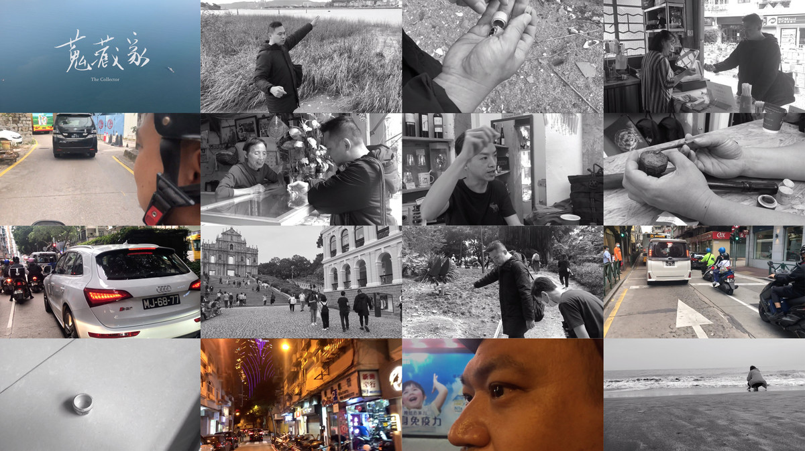

海边笔记

收藏家 单屏幕影像，约30分钟，尺寸可变，2020
为与友人，澳门市民、渔村居民、古董商、文博专家讨论澳门的鸦片膏罐的故事。
澳门条约 装置，陶制鸦片膏罐，整体尺寸可变，文件50x70cm，2020
将这些鸦片膏罐在展厅里呈现，展完这些鸦片膏罐将还给澳门友人。
至今在澳门沿海地区或者沙滩上可以捡到这些鸦片膏罐。鸦片战争时期澳门为远东最大的鸦片中转站，友人告诉我这些都是清代末年南海上的鸦片运输船的遗留物，沉在海底后，被百年潮汐、海浪冲回海岸。
与友人签订一则《澳门条约》，约定在展览期间向友人借所有他收藏的鸦片膏罐，并在展厅里将这些鸦片膏罐摆放成1842年（南京条约签订时间）清国地图的輪廓，展览结束后这些鸦片膏罐将如数返还。
1842年清国地图轮廓 单屏幕影像，約20分钟，尺寸可变，2020
一群澳门年轻人，在南中国海的沙滩上画出1842年（南京条约签订时间）清国地图的輪廓，任由海水冲刷。
部分图片由牛房仓库提供，摄影李佩禎